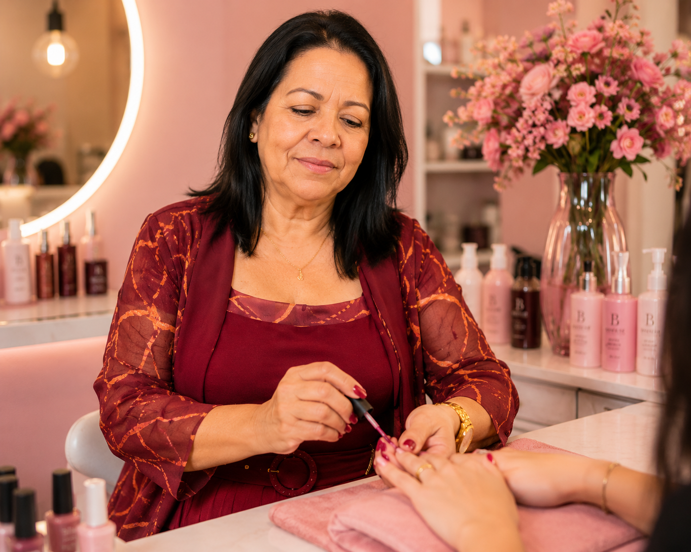

Minha História
Uma vida de luta
A vida de Joana Florêncio não foi fácil. Ao longo de sua trajetória, trabalhou como faxineira, copeira, recepcionista e babá. Mãe de três filhos, enfrentou grandes desafios, especialmente com um deles, que nasceu com deficiência motora.
O início de um sonho
Sempre sonhando em ter seu próprio salão de beleza, começou sua jornada profissional na área em 1988, quando fez um curso de manicure. Trabalhou exclusivamente nesse ramo por cerca de 20 anos.
O sonho realizado
Com muito esforço, dedicação e perseverança, Joana finalmente realizou seu grande sonho: conquistar seu próprio salão de beleza, montado em sua própria casa, onde continua transformando vidas e elevando a autoestima de suas clientes.
Força que vem do amor
Desde o nascimento do filho, Joana aprendeu a lutar incansavelmente por sua família. Mesmo após a perda dele, ela continuou sua caminhada com força e determinação, sem jamais abaixar a cabeça diante das dificuldades.
Novos caminhos
Com o passar do tempo, suas clientes passaram a incentivá-la a expandir seus conhecimentos e atuar também como cabeleireira. Motivada por esse apoio, em 2013 ela realizou seu primeiro curso de cabeleireira e, desde então, buscou constantemente se aperfeiçoar, fazendo diversos outros cursos na área.
Meus Valores
Respeito e empatia
Cada cliente é única e merece ser acolhida com carinho.
Excelência
Busco sempre oferecer o melhor em qualidade e atendimento.
Dedicação
Cada detalhe importa para realçar a beleza e a autoestima..

''